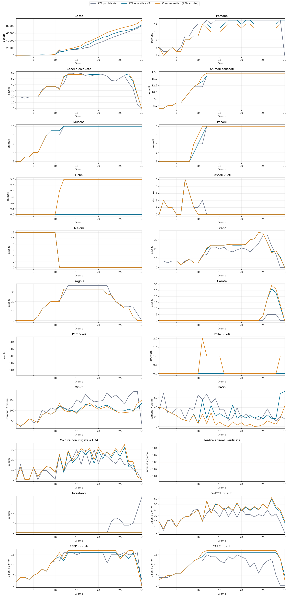

La traduzione ora è eseguibile sulla geometria della 772: visite, rifornimenti, collocamenti, servizi e consegne sono implementati. La candidata locale è operational772_v8_policy.py. Non è una nuova submission.
Nel caso di sviluppo 180911301, ruolo 0 contro la 775 congelata, la V8 chiude a 82.342, contro 80.178 della 772 pubblicata (+2.164; +2,7%). Conserva la geometria e le specie esatte della 772, senza fughe. Le fragole sono 4/20/33 a D6/D9/D12. Il calendario completo non è ancora identico: a D12 risultano 20 grani invece di 21.
Le visite animali spostano la pecora da (1,4) a (4,6), sostituiscono l’oca in (4,1) con una mucca in (4,5), l’oca in (3,2) con una pecora, eliminano l’oca in (2,3) e trasformano la pecora in (6,3) in mucca. Le colture delle due caselle Q2 sono trasferite in (4,1) e (2,3). Coordinate zero-based (x,y).
Da D12 un aiutante aggiuntivo serve i due pascoli Q2; terminata la routine interviene sugli animali osservati senza cibo e, se raggiungibili, sulle colture in stress idrico. Le giornate dei lavoratori non coinvolti mantengono gli ordini originali. Quando la posizione reale differisce da quella attesa, le pause e le finestre di servizio permettono il recupero del percorso. Sono stati necessari 9 comandi di recupero nel caso di sviluppo.
I primi 144 turni (D1–D6) sono identici al controllo registrato. Il mercato conserva l’ordine degli ordini storici, ma adegua animali, rifornimenti e vendite alle scorte osservate. Non è stata ricostruita una politica privata di previsione dei prezzi.
| Seed | Versione | Cassa | Cassa 775 avversaria | Fragole D6/9/12 | Fughe | Perdite colture |
|---|---|---|---|---|---|---|
| 180911301 | 772 pubblicata | 80178.0 | 96530.0 | [4, 20, 28] | 0 | 4 |
| 180911301 | 772 V8 | 82342.0 | 87310.0 | [4, 20, 33] | 0 | 2 |
| 180911303 | 772 pubblicata | 65312.0 | 62688.0 | [4, 20, 32] | 0 | 3 |
| 180911303 | 772 V8 | 106606.0 | 106981.0 | [4, 20, 33] | 0 | 2 |
La maggiore cassa non equivale a una vittoria. Sul seed 301 lo scarto contro la 775 passa da −16.352 a −4.968; sul seed 303 passa da +2.624 a −375. La V8 perde entrambi gli scontri, mentre la base ne vince uno. Non viene quindi promossa per una nuova pubblicazione.
Sono seed esposti di sviluppo, stesso ruolo 0. La strategia modifica anche il mercato condiviso: stessi seed e avversario non significano stessi prezzi. Queste prove non dimostrano un vantaggio generalizzato e non coprono il ruolo opposto. I seed riservati 180912401–407 restano inutilizzati. Su entrambi i casi V8: 719 chiamate, zero errori, zero fughe, geometria/specie finali identiche alla 772 pubblicata e fragole 4/20/33. Gli hash di policy, piani e controlli coincidono con i protocolli congelati.
Gli ordini originali eseguiti direttamente nel nuovo ambiente, senza adattamento, chiudono a 95.229 contro 83.193 della 775. È la struttura nativa 770 con 8 mucche, 6 pecore e 3 oche. Le prime ricostruzioni dell’esecutore nativo producevano solo 74–76 mila: avevano alterato troppe visite. Da V5 il controllo nativo è quindi la sequenza originale esatta. Il divario con la V8 comprende struttura, specie, lavoro, ordini di mercato ed esecuzione: non attribuirlo soltanto agli animali.
| Versione | Cassa finale | Incassi vendite | Acquisti | Costo assunzioni | Perdite colture | Fughe |
|---|---|---|---|---|---|---|
| 772 pubblicata | 80178 | 110419 | 22841 | 7400.0 | 4 | 0 |
| 772 operativa V8 | 82342 | 111534 | 23588 | 5604.0 | 2 | 0 |
| Comune nativo (770 + oche) | 95229 | 119447 | 20588 | 3630.0 | 2 | 0 |
Acquisti e assunzioni sono flussi osservati; il ledger include anche terreni e altre variazioni. Il divario di circa 13 mila dal nativo non è spiegato dalle sole scorte residue.
| D | Versione | Cassa | Fragole | Grano | Mucche | Pecore | Oche | Persone |
|---|---|---|---|---|---|---|---|---|
| 1 | 772 pubblicata | 22.0 | 0 | 7 | 2 | 2 | 0 | 6 |
| 1 | 772 operativa V8 | 32.0 | 0 | 7 | 2 | 2 | 0 | 6 |
| 1 | Comune nativo (770 + oche) | 32.0 | 0 | 7 | 2 | 2 | 0 | 6 |
| 6 | 772 pubblicata | 851.0 | 4 | 3 | 4 | 2 | 0 | 6 |
| 6 | 772 operativa V8 | 810.0 | 4 | 3 | 4 | 2 | 0 | 5 |
| 6 | Comune nativo (770 + oche) | 810.0 | 4 | 3 | 4 | 2 | 0 | 5 |
| 9 | 772 pubblicata | 597.0 | 20 | 5 | 8 | 4 | 0 | 11 |
| 9 | 772 operativa V8 | 471.0 | 20 | 5 | 9 | 3 | 0 | 9 |
| 9 | Comune nativo (770 + oche) | 1258.0 | 20 | 5 | 8 | 4 | 0 | 9 |
| 12 | 772 pubblicata | 14748.0 | 28 | 14 | 10 | 6 | 0 | 13 |
| 12 | 772 operativa V8 | 10671.0 | 33 | 20 | 10 | 6 | 0 | 12 |
| 12 | Comune nativo (770 + oche) | 13797.0 | 33 | 21 | 8 | 6 | 3 | 11 |
| 15 | 772 pubblicata | 16131.0 | 37 | 20 | 10 | 6 | 0 | 13 |
| 15 | 772 operativa V8 | 18136.0 | 33 | 24 | 10 | 6 | 0 | 11 |
| 15 | Comune nativo (770 + oche) | 22870.0 | 33 | 24 | 8 | 6 | 3 | 10 |
| 20 | 772 pubblicata | 33458.0 | 37 | 21 | 10 | 6 | 0 | 13 |
| 20 | 772 operativa V8 | 43064.0 | 33 | 24 | 10 | 6 | 0 | 12 |
| 20 | Comune nativo (770 + oche) | 49143.0 | 33 | 25 | 8 | 6 | 3 | 11 |
| 25 | 772 pubblicata | 55883.0 | 16 | 35 | 10 | 6 | 0 | 13 |
| 25 | 772 operativa V8 | 64448.0 | 17 | 37 | 10 | 6 | 0 | 12 |
| 25 | Comune nativo (770 + oche) | 72872.0 | 17 | 37 | 8 | 6 | 3 | 11 |
| 30 | 772 pubblicata | 80178.0 | 0 | 0 | 10 | 6 | 0 | 4 |
| 30 | 772 operativa V8 | 82342.0 | 0 | 0 | 10 | 6 | 0 | 13 |
| 30 | Comune nativo (770 + oche) | 95229.0 | 0 | 0 | 8 | 6 | 3 | 12 |
La V8 sul primo seed perde due colture e nessun animale. A fine partita restano 3 unità di lana nel magazzino, 1 grano trasportato e semi inutilizzati (3 grano, 3 carota). La liquidazione non è quindi completa. Il passaggio dei tre checkpoint delle fragole non certifica l’intera successione colturale: tutte le differenze giornaliere sono in VERIFICATION.json.
Rettifica diagnostica: la mucca persa nelle V5/V6 era in (5,3), nel quadrante nord-est, a D26 H24; non era una delle due Q2. Nelle V7/V8 la perdita non si ripete sul caso di sviluppo.
| Versione | Cassa 772 | Fragole D6/9/12 | Fughe | Modifica |
|---|---|---|---|---|
| V1 | non valido | — | — | Non valido: ordine mercato vuoto, run interrotta. |
| V2 | 54515.0 | 3/16/27 | 0 | Prima esecuzione completa; rifornimenti e visite ricostruiti. |
| V3 | 55955.0 | 3/16/27 | 0 | Riserva fertilizzante e rientro finale. |
| V4 | 57192.0 | 3/14/25 | 0 | Precarico animali, dipendenze BUILD/PLACE. |
| V5 | 72742.0 | 4/20/33 | 1 | Ripristinate sequenze originali dei lavoratori non coinvolti. |
| V6 | 70945.0 | 4/20/31 | 1 | Aggiunto specialista Q2; corretti indici delle sequenze originali. |
| V7 | 71196.0 | 4/20/31 | 0 | Recupero servizi mancanti: zero fughe. |
| V8 | 82342.0 | 4/20/33 | 0 | Recupero posizione reale degli aiutanti durante pause/servizi. |
Le revisioni sono sviluppo sullo stesso caso, non repliche statistiche. V1 è esclusa dai confronti economici. I log di visite incompiute V5 includono un errore di avanzamento degli indici delle azioni originali, corretto da V6: non usarli come conteggio affidabile delle visite fallite.
MOVE/PASS sono comandi richiesti; WATER/FEED/CARE sono azioni riuscite. Cassa e quantità sono osservate nel replay. I tracciati riguardano tutta la fattoria.

Dati KPI CSV · Verifiche e differenze giornaliere · Risultati dei due seed · Hash sorgenti congelate · Policy implementata